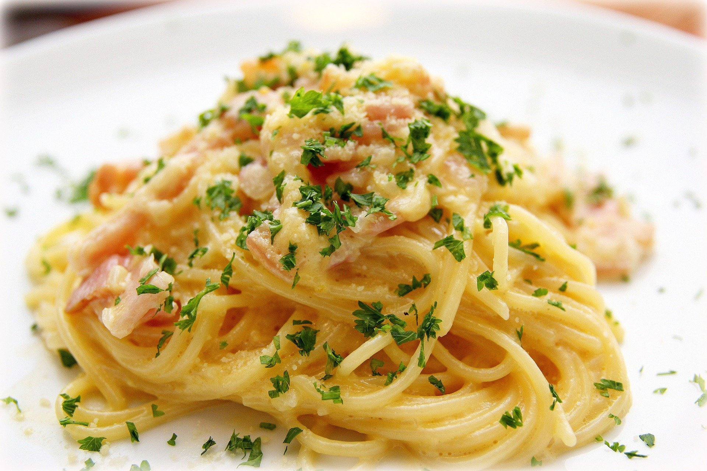

- CARBONARA
- AGLIO E OLIO
- SPAGHETTI BOLOGNESE
CARBONARA

Carbonara (Italian: [karboˈnaːra]) is an Italian pasta dish from Rome made with egg, hard cheese, cured pork, and black pepper. The dish arrived at its modern form, with its current name, in the middle of the 20th century.
The cheese is usually Pecorino Romano, Parmigiano-Reggiano, or a combination of the two. Spaghetti is the most common pasta, but fettuccine, rigatoni, linguine, or bucatini are also used. Normally guanciale or pancetta are used for the meat component, but lardons of smoked bacon are a common substitute outside Italy.